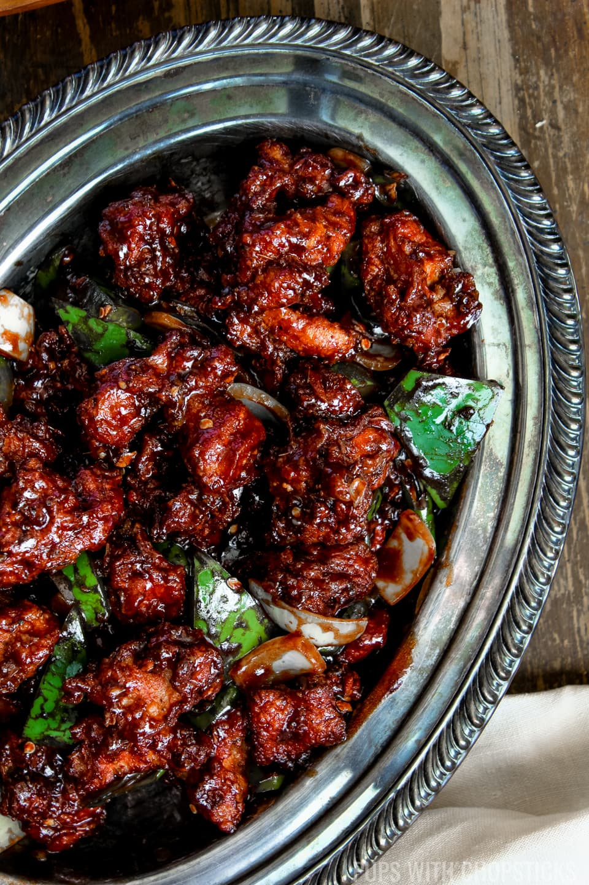

Chicken Chilli is a quintessential Indo-Chinese fusion dish that perfectly balances spicy, tangy, and savory flavors. It typically consists of bite-sized pieces of chicken that are battered and deep-fried until golden and crispy, then tossed in a vibrant wok with a thick, glossy sauce. This signature sauce is a high-heat emulsion of soy sauce, green chili paste, vinegar, and sometimes a hint of ketchup, which coats the chicken and creates a mouthwatering glaze that defines the dish.
The texture and aroma of Chicken Chilli are enhanced by the addition of crunchy aromatics, most notably large chunks of sautéed onions and bell peppers. Freshly slit green chilies, minced ginger, and garlic are flash-fried to release their essential oils, providing a sharp heat that cuts through the richness of the fried chicken. Whether served "dry" as a popular appetizer or with a thick gravy alongside fried rice, it remains a celebrated staple of street food stalls and upscale restaurants alike.